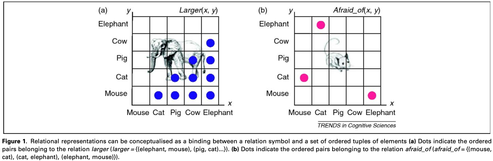
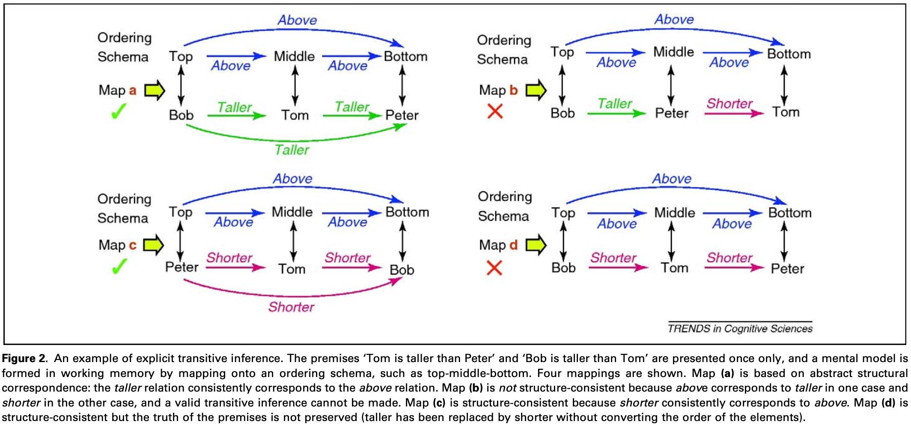

- Halford, G. S., Wilson, W. H., & Phillips, S. (2010). Relational knowledge: The foundation of higher cognition. Trends in Cognitive Sciences, 14(11), 497–505
I will not cover the STAR and DORA models (p.501-502), since they are not part of the curriculum.

- The caption pretty much explains the term of “relation”.
- X is related to Y in terms of Z.
These representations provide a knowledge base for estimating conditional probabilities (e.g. of a horse being larger than a dog).
Relational representations have several core properties and are not to be confused with nonanalytic processes
Nonanalytic processes
- association
- automatic or modular processes
Core properties of relational representations
Structure-consistent mappings
correspondences between representations that preserve structure. One example would be the way relations between dots on a map correspond to relations between the places they represent, even though the dots have no resemblance to the places. Structural correspondence relies on consistent mapping of elements and relations.

In the Figure above, we can differentiate the maps as follows:
- Map A is based on abstract structural correspondence: the taller relation consistently corresponds to the above relation
- Map B is not structure-consistent because
abovecorresponds totallerin one case andshorterin the other a valid transitive inference cannot be made (so many fancy words for saying we can’t draw a conclusion). - Map C is structure-consistent since
shorterconsistently corresponds toabove. - Map D is structure-consistent but the truth of the premises is not preserved.
Tallerhas been replaced byshorterwithout converting the order of the elements
Compositionality
Representations of complex entities are compositional when the constituent entities from which they are constructed retain their identity in the compound representation and are accessible.
Given larger (horse,dog) we can determine the answer to ‘‘what is larger than a dog?’’ (horse) and the answer to ‘‘what is the specified relation between horse and dog?’’ (larger) and so on.
Systematicity
certain cognitive capacities are intrinsically connected in that, for example, the capacity to understand John loves Mary implies the capacity to understand Mary loves John. Systematicity enables generation of novel instances.
These core properties of relations help explain their foundational role in higher cognitive functions
Working Memory
- is recognized as the workspace where relational representations are constructed. It plays a role in the determination of structural correspondence because the mapping between elements is temporary and because validity of a mapping can be established by activating the representations without external input.
- For example, in the Figure above, a structurally consistent mapping can be determined from the correspondence between the premises and the ordering schema. In other words, the ordering schema in the Figure would be an example of a coordinate system.
Analytic processing subsystem
The representations are based on activation of long-term memory, and there is a region of direct access, a focus of attention, and a procedural working memory
Working memory accounts for approximately 50% of variance in fluid intelligence and it shares substantial variance in reasoning that is not accounted for by processing and storage demands, or by processing speed. This indicates that the shared variance at least partly reflects ability to form structured representations.
Working Memory is ...
- the workspace where relational representations are constructed and it is influenced by knowledge stored in semantic memory. Therefore, it plays an important role in the interaction of analytic and nonanalytic processes in higher cognition
The foundation of reasoning, language, categorisation and planning
Relational knowledge integrates nonanalytic and analytic cognition, sometimes called Type 1 and Type 2 respectively.
- Implicit inferences are nonanalytic to the extent that they reflect associative learning
- Explicit inferences are analytic because it reflects the logical consequences of the relevant relations.
Analogy: in A is related to in B because both share a property .
- so ‘woman feeding squirrel’ is not similar to ‘squirrel feeding woman’ because the elements, although identical, are not in corresponding slots.
A mental model for transitive inference can be formed by mapping premises into existing schemas.
The time vector makes inferences not transitive anymore. “Tom was taller than Jim”
Mental models embody the core properties of relational knowledge, including structure-consistent mapping, compositionality, systematicity, and construction of mental models in working memory. Relational knowledge, as embodied in mental models, also incorporates nonanalytic knowledge and provides an account of its interaction with analytic knowledge.
Language
The syntactic structure of language can be expressed as relations.
Recursion has been proposed as an essential foundation for language and relational knowledge is recursive. This might be the most important implication of relational knowledge for language.
Categorization
Relational categories, such as parenthood, which is defined by relation to an offspring, have high frequency and importance. Not going too much into detail.
Planning
also part of higher cognitive functions.
The acquisition of relational knowledge: Relational knowledge can be acquired from experience with examples and is partly autonomous and self-supervised. Implicit learning is evolutionarily and developmentally early, is robust to neurological damage and makes low information-processing demands.
The Semantic Cognition model demonstrates that some relational properties can be captured without formal representations of structure.